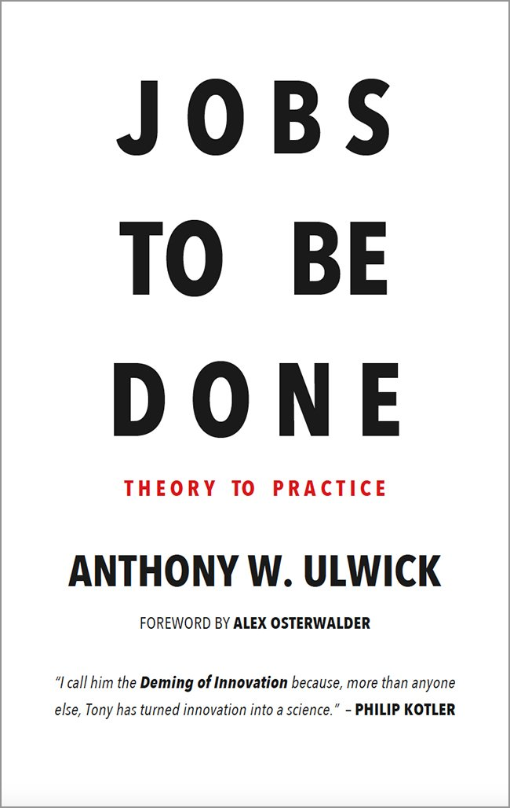

5 min read
Nobody Wants Your Software
Customers don't care about your solution. They care about their desired outcomes.
At Lira, we recently built a beta workflow that lets users to create a resume. To know what to build, we first had to zoom out and ask what customers actually want from it. And the truth is nobody wants a resume builder. They want the resume. And they don't really want the resume either, or the interviews it wins, or even the job. What people are after is the income, security, and sense of purpose a job provides.
Every product sits in a hierarchy of desired outcomes, and customers will hire whichever solution does the best job of moving them to their desired outcomes.
Some product teams get this backwards. They fall in love with the solution, then hunt for people who might want it.
The fix is to audit the job before you touch the solution. Map every step and learn what matters to the customer at each one. Build for the steps where customers struggle, and they'll hire your product, love it, and hire it again.
Step 1Write the job statement
The audit starts with naming the job. In the Jobs to Be Done framework, a job statement captures what the customer is trying to get done in a single sentence.
A good job statement follows three principles.
- Stable over time. It would have made sense 20 years ago.
- Solution agnostic. It describes what the customer wants done, not how.
- Right level of abstraction. Concrete enough to map the steps, but not so broad it becomes an abstract aspiration.
Here's each principle, failed and passed.
| Principle | Bad example | Good example |
|---|---|---|
| Stable over time | Send a WhatsApp message | Send a message to someone in another location |
| Solution agnostic | Cook a recipe from a meal kit | Get a nutritious dinner on the table on a weeknight |
| Right level of abstraction | Stay on top of my money | File an accurate tax return on time |
Back to our resume builder. Here's the job that feature serves.
Convey my qualifications to a hiring decision-maker for a target job.
Step 2Map the job

Most jobs break down into some version of the same eight steps. This is the job map, from Tony Ulwick's book Jobs to Be Done: Theory to Practice. It describes what the customer is trying to accomplish at each stage, regardless of what solution they use.
The eight steps.
- Define. Determine goals and plan how to get the job done.
- Locate. Gather the inputs and information needed.
- Prepare. Set up and organize the inputs.
- Confirm. Verify everything is ready before proceeding.
- Execute. Carry out the core of the job.
- Monitor. Assess whether the job is going well.
- Modify. Make adjustments as needed.
- Conclude. Finish the job or get ready to repeat it.
Here's the map applied to our resume job.
Convey my qualifications to a hiring decision-maker for a target job
Step 3Understand how customers measure value
The map tells you what customers are trying to do. It doesn't tell you how they judge success. For that, look at the metrics customers carry in their heads at every step, whether they can articulate them or not. These are the desired outcomes.
Customers measure value along a set of dimensions.
- Speed. How long a step takes.
- Effort. How much work a step demands.
- Predictability. How consistent the result is each time.
- Likelihood of errors. The chance of mistakes during the step.
- Risk. The chance of a bad consequence downstream.
- Output. How much gets done, or how good the result is.
- Waste. Work that gets thrown away, including rework.
- Cost. The money required.
Desired outcomes hang off the steps of the map. Here's the resume job again, with a few of its outcomes written out.
Convey my qualifications to a hiring decision-maker for a target job
Notice that most outcome statements collapse into two forms. Minimize the time it takes to… and minimize the likelihood that…. A typical job produces 50 to 150 of these statements across the map.
Step 4Find where customers struggle
Desired outcomes are where the audit pays off. The outcome your customer ultimately cares about comes from getting the whole job done. Desired outcomes measure how well each step is going. Serve the steps well and the customer reaches the outcome.
For every outcome statement, ask customers two questions. How important is this to you, and how satisfied are you today?
Important and poorly satisfied means underserved, and underserved outcomes are what customers will pay to fix. In the resume job, formatting is well served. Every tool does it for free. But tailoring at volume and surviving automated screening are important and badly served. That's where the opportunity is.
Convey my qualifications to a hiring decision-maker for a target job
How this actually helps
The list of things you could build is endless. Every customer call, every competitor launch, every brainstorm adds to it. The audit is how you stay on track. It helps in three ways.
- It filters your roadmap. Every feature idea has to name the job step it serves. No step, no build.
- It scores your features. Desired outcomes are the yardstick. A feature is good if it measurably improves one, and great if the one it improves is underserved.
- It points to your next bet. The importance and satisfaction questions surface the underserved outcomes, and those are where customers are waiting to pay.
Your customer doesn't want your product. They want the job done. The audit keeps you building toward that, and nothing else.